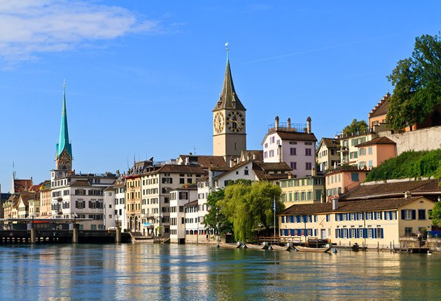
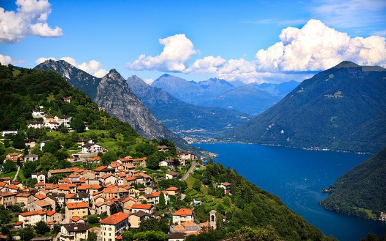

places
Geneva, geneva is oe of the most importat tourist cities in Switzerland and one of the most beautiful cities in Eurpe. it is located on the coast of the charming lake geneva and surrounded by the Alps and the Jura mountains. geneva resident speak French and the city is famous for it's many museums, galleries and beutiful landmarks.
Innterlaken, Innterlaken in switherland ia a country visited by thousands of tourists anually and is considered one of the prominent destinations for tourism in Eurpe
beautiful cities in switherland
 Most cities in Switzerland and the largest ever. It is located in the center of the north of the country on the border from the border to the north of the country on Lake Zurich . The city is well known for its banking services that do business in the world. It has got a straight area of the country to live.
 The city of Lugano or Lugano is one of the most beautiful tourist cities in Switzerland. It is located in the south near Italy and one of the largest cities in Switzerland. It is a tourist destination because of its charming nature and its views of the lake called “Lake Lugano”, surrounded by majestic mountains.Lugano includes the most important tourist areas in Switzerland, which are represented in historical monuments, such as museums and churches.
lucerne
lausanne
lucerne
Lucerne is located in central Switzerland, specifically on the western shore of Lake Lucerne and on the banks of the Roiss River. Lucerne was founded at the beginning of the eighth century AD, and was the first city to join the Swiss Confederation in 1332 AD, and the city became completely independent after the Battle of Simbach (English: Sempach) in 1386 AD, there is a famous memorial in Lucerne, which was erected in memory of the Swiss Guard who was killed in Paris in 1792 AD. Various museums, and a music festival is held in the city annually,[2] and the population of Lucerne is about 57,066 people.[3]
lausanne
One of the famous and beautiful cities in Switzerland, which is about 60 km from Geneva, and on the road between the two cities there are stunning views, where Lake Geneva is on the right and the green hills, which are scattered by red-tiled houses on the left, and the towering Alps behind the lake in a view of the most beautiful landscapes globally. The city of Lausanne has the famous Olympic Museum and the zoo. And in the Ouchy area in the center of Lausanne on the shores of the lake, there are luxury hotels, restaurants and great seating areas to enjoy the fresh lake air and have a refreshment. Lausanne, the second largest Swiss city on the shores of the famous Lake Geneva, combines the dynamism of a commercial city with its important position as an attractive tourist resort. The capital of the Vaud region is also bustling with movement, vitality and activity, with its university and hosting conferences. Sports and culture also give this Olympic capital a high profile.
tourism in Switzerland
Switzerland is distinguished by its strategic location in the south of mid-continent of Europe, and it shares its borders with many European countries. It is to the north of Germany, to the west of France, to the east of Austria and Liechtenstein, and to the south of Italy. Most of the Swiss lands are located on a group of mountains Jura, and on a section of the Alps group, and the capital of Switzerland is the city of Bern, although the largest city is the city of Zurich, and the total area of Switzerland is about 41,290,000 km².
.jpg)